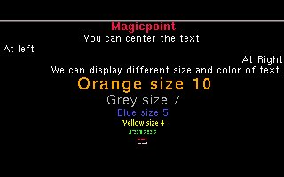
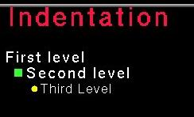
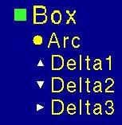
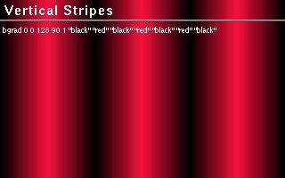
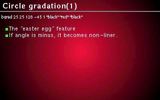
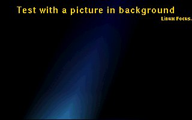

![[Bottom bar]](MagicPoint.files/Bottombar-ru.gif)
| Эта заметка доступна
на: English
Castellano
Deutsch
Francais
Russian
Turkce
|
![[Photo de l'auteur]](MagicPoint.files/Charles-V.jpg)
автор Charles VIDAL
Об
авторе :
Владелец гастрономического склада в Париже. Приверженец философии GNU и
Open Source за возможность обмена знаниями. Хотел бы выделять время для
игры на саксофоне.
Содержание:
- Введение
- Функции.
- Синтаксис
и примеры
- Отступ
- Фон
- Эффекты
:
- Страница
отзывов
|
MagicPoint
Резюме:
Заметка рассказывает о бесплатном программном продукте MagicPoint. Это один
из бесплатных презентационных программных продуктов для X-Window.
Введение
Программные продукты для проведения презентаций стали популярными несколько
лет назад и в настоящее время включаются в офисные приложения. До этого, чтобы
провести презентацию с помощью бесплатной системы, использовали проекторы со
слайдами ( latex Slitex ).
Появление возможности использования дисплея компьютера для проведения
презентаций сделало сами презентации лучше. MagicPoint работает на любой
X11/Unix системе.
Этот программный продукт пришел из мира BSD и был разработан японцами.
Презентация с помощью MagicPoint проводится на основе текстового файла. Его
синтаксис мы рассмотрим позже.
Используйте библиотеку FreeType , но
помните, что Applet имеет патент на шрифты.
Примеры
изображений, созданных с помощью MagicPoint.
Функции.
Текст может быть представлен :
- различными шрифтами, размерами шрифтов, цветом.
- специальным отступом.
- выравниваем.
- использованием списков.
- использованием изображений.
- результатом работы внешней программы ( текст и графика ).
- применением различных эффектов.
Выходной файл можно вывести на
экран или сохранить в следующих форматах : HTML, latex или postscript.
Синтаксис и примеры
Символ % является специальным - его появление MagicPoint воспринимает
как начало команд. Несколько команд после % должны быть разделены
запятой. Если строка не начинается с % - она рассматривается как текст
презентации. %% - комментарии.
Обычно документ MagicPoint начинается
с :
%include "default.mgp"
%page
Команда
include включает файл ( например default.mgp ). Команда
page начинает новую страницу. Следующая строка будет заголовком.
| Команды |
|
| %page |
начало новой страницы. |
| %size size |
установка размера шрифта. |
| %fore "color" |
цвет символа. |
| %back "color" |
цвет фона. |
| %left |
выравнивание по левой границе. |
| %leftfill |
выравнивание по левой границе с переносом длинных строк. |
| %center |
выравнивание по центру. |
| %right |
выравнивание по правой границе. |
| %cont |
вывод без переноса строки. |
| %pause |
остановка пока нажата клавиша. |
Рассмотрим
небольшой пример :
%include "default.mgp"
%%%%%%%%%%%%%%%%%%%%%%%%%%%%%%%%%%%%%%%%%%%%%%%%%%%%%%%%%%%%%%%%%%%%%%%
%page
%fore "red", size 6
%center
Magicpoint
This will be centered
%left
This will appear left justified
%right
and this right justified
Text can be shown with any size or color.
%CENTER
%SIZE 10,FORE "orange"
Orange size 10
%SIZE 7,FORE "gray"
Grey size 7
%SIZE 5,FORE "blue"
Blue size 5
%SIZE 4,FORE "yellow"
Yellow size 4
%SIZE 3,FORE "green"
Green size 3
%SIZE 2,FORE "red"
Red size 2
%SIZE 1,FORE "pink"
Pink size 1

Если вы нажмете
клавишу
Ctrl, внизу экрана появится изображение с номерами страниц, на
которые можно переходить щелчком по их номеру.
Отступ
%tab изменяет формат вывода текста :

Пример : %tab 1 size 5, vgap 40, prefix " ", icon box "green" 50
Доступные символы :

Фон
Команда для изменения цвета фона
bgrad.
Рассмотрим
два примера : 

У этой команды много аргументов :
- xsize ширина изображения(0-100%) 0 - физический размер дисплея
- ysize высота изображения(0-100%) 0 - физический размер дисплея
- numcolor количество цветов, 0 - без сокращения. по умолчанию 256 цветов (8
бит)
- dir градация (0-360 градусов)
- 0 :сверху вниз
- 90 :слева направо
- 180 :снизу вверх
- 270 :справа налево
по умолчанию 0, отрицательное значение -
"нелинейная градация"
- zoomflag: увеличение до максимального размера
- 0 без увеличения
- 1 увеличение
по умолчанию 0
- colorlist цвета в изображении
Также можно использовать в качестве фона изображение командой bimage.
Синтаксис :
%bimage "imagefile" [ <screensize> ]
Определяет имя файла для фона.
<screensize> :: авторазмер. устанавливает настоящее разрешение
изображения ( WIDTH x HEIGHT ). Пока screensize установлен в размер физического
размера дисплея, zoomrate вычисляется автоматически.
Пример :
%page
%nodefault
%size 7, font "thick", fore "gold", bimage "bg-black-brilliant.jpg" 1024x768
%center, size 4
%size 7
Test with a background image
%cont, size 7
%right
%size 4
Linux Focus.

Эффекты :
С помощью MagicPoint можно добавлять эффекты анимации к тексту
и изображениям.
- %lcutin - применение анимации к тексту ( перемещение текста из
крайнего левого положения страницы ).
- %rcutin - применение анимации к тексту ( перемещение текста из
крайнего правого положения страницы ).
Выполнение программы во время презентации
Magic Point может отбражать на дисплее
результат выполнения команды оболочки ( например версии ядра Linux ). Для
использования этой возможности, применяйте следующий синтаксис :
%filter "command"
текст для перенаправления на стандартный поток ввода команды
....
%endfilter
Для отображения версии ядра Linux выполните следующую команду :
%filter "cat /proc/version"
%endfilter
Для лучшего понимания синтаксиса попробуйте :
%filter "rev"
This is a test
%endfilter
Результатом будет строка :
tset a si sihT
Также MagicPoint может отображать результаты выполнения
графической программы :
Пример %system "xeyes -geometry %50x20+25+60"
Подробная документация по синтаксису находится в файле SYNTAX в архиве
MagicPoint.
Аргументы mpg :
| -b color |
цвет фона |
| -d |
демо ( просмотреть презентацию ) |
| -g geometry |
установить геометрию окна |
| -h |
отобразить данную помощь |
| -n |
запретить ввод от управляющих клавиш |
| -o |
не заменять менеджера окон |
| -p page |
начать с определенной страницы |
| -q |
не воспроизводить сигнал при возникновении ошибки |
| -t timeslot |
включить таймер |
| -v |
отобразить версию |
| -w dir |
определить рабочий каталог |
| -x engine |
запретить исполнение |
| -B |
игнорировать фоновое изображение |
| -C |
использовать персональную палитру |
| -D
|
создать HTML-файлы для презентации |
| -F mode,effect,value |
использовать "forwarding caches" |
| -G |
включить навигатор страниц |
| -O |
работать под управлением менеджера окон |
| -Q quality |
установить качество фонового изображения(0-100) |
| -R |
не выполнять автоматическую перезагрузку |
| -S |
не выполнять директивы, порождающие параллельные процессы |
| -T timestampfile |
обновлять timestampfile при обновлении страницы |
| -V |
verbose |
| -X gsdevice |
использовать устройство ghostscript |
Использование файла .mgp
Существует опция для опубликования презентации в Internet :
mpg -D
каталог с выходными данными mgp -D каталог, где html и изображения будут
созданы.
Вам необходимо установить xwintoppm ( файл находится
в каталоге contrib архива ) и ассоциировать с переменной PATH.
Каждый кадр будет сохранен в html файле. Также существует несколько программ,
переносящих файлы из формата mgp в другие ( например mgp2ps : mgp в Postscript
). Примеры
html - файлов, созданных MagicPoint. .
В каталоге contrib, находятся
следующие perl-скрипты :
- mgp2html.pl
- mgp2latex.pl
Ссылки :
- MagicPoint's Home Page
- The MagicPoint Gallery
- Magic
Point RPM Source
- Binairy
I686.rpm Magic Point
Компиляция :
Следуйте инструкциям для компилирования MagicPoint:
- ./configure -help (прочитайте и выберите необходимую вам конфигурацию)
- ./configure
- xmkmf
- make Makefiles
- make
- make install (необходимо выполнять с привилегией root)
Страница отзывов
У каждой заметки есть страница отзывов. На этой
странице вы можете оставить свой комментарий или просмотреть комментарии других
читателей.
Webpages maintained by the LinuxFocus Editor team
© Charles VIDAL
LinuxFocus.org 2000
Click here to report a fault or send a
comment to Linuxfocus
|
Translation
information:
|
2000-08-17, generated by lfparser version
1.5